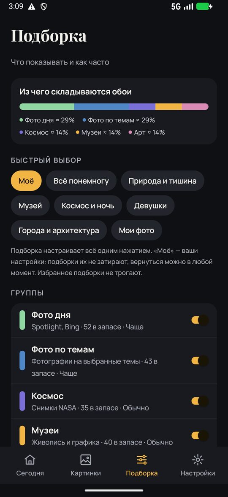
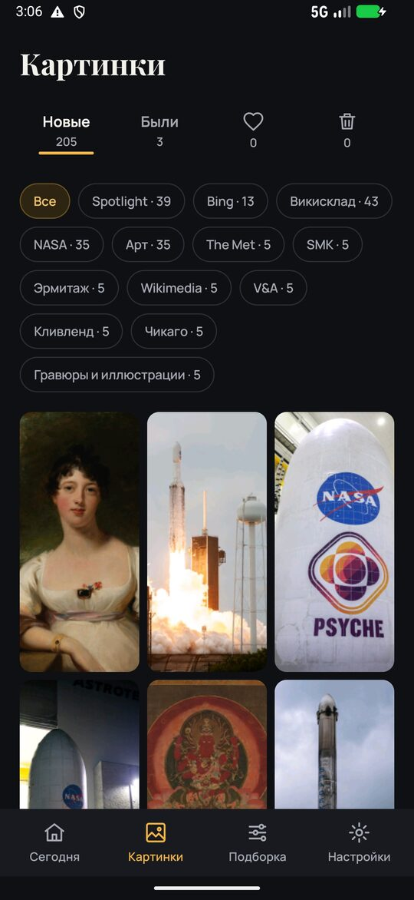
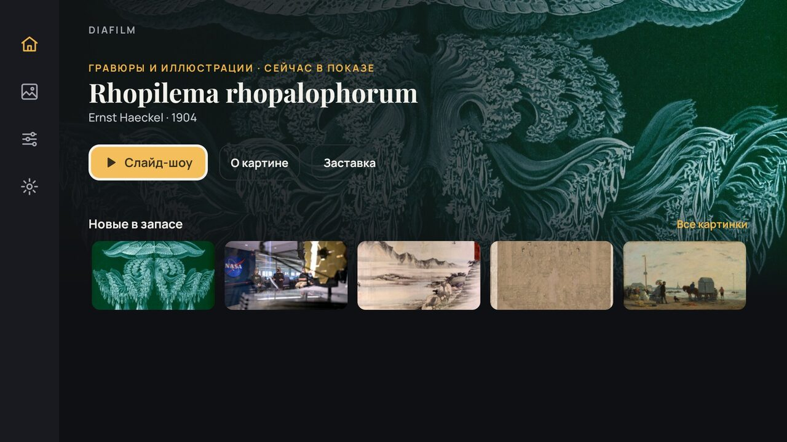
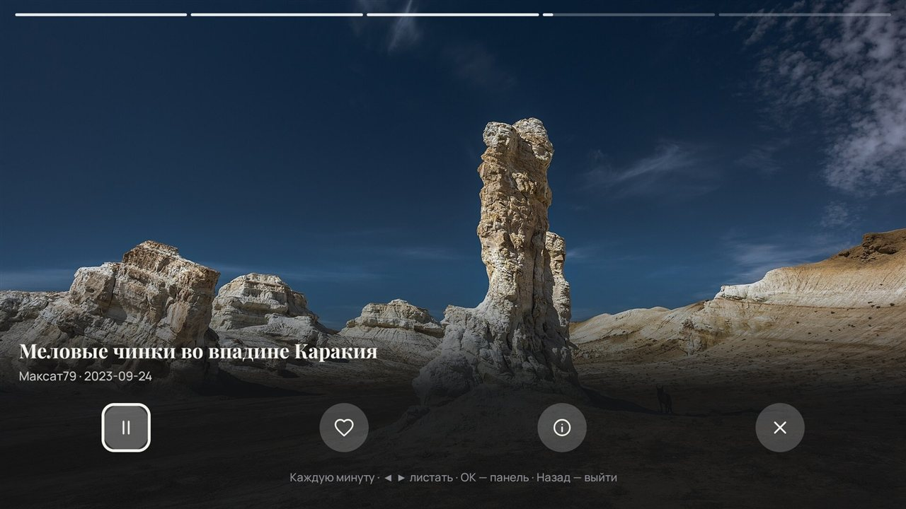
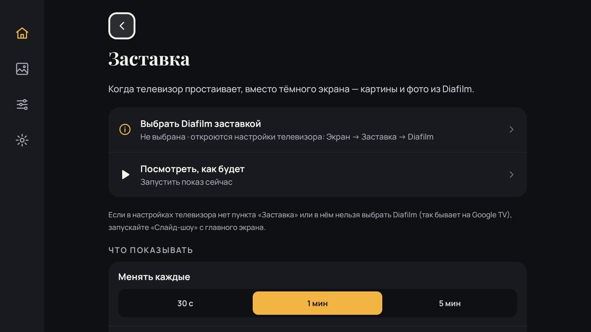

На телефоне
- Обои меняются сами: экран блокировки — когда гаснет экран, рабочий стол — по таймеру или двойным касанием.
- Картинки в 4K и HD, всегда под ваш экран: на телефоне — вертикальные, на планшете и телевизоре — горизонтальные.
- Новая картинка готовится заранее, поэтому подмены не видно.
- Слайд-шоу во весь экран и фоторамка, пока телефон заряжается.
- Ночью — спокойные тёмные картинки или без смены, как настроите.
- У каждой картинки — название, автор и откуда она.


На телевизоре
- Заставка: когда телевизор простаивает — картины и фото вместо тёмного экрана.
- Слайд-шоу с пульта: стрелки — листать, ОК — пауза и «О картине».



Что показывать — решаете вы
Фото дняновый снимок каждый день
Фото по темамприрода, горы, океан, города, машины и другие темы
Космосснимки NASA
Музеиживопись и графика: The Met, Эрмитаж, Кливленд, SMK, V&A и другие
Аниме и артаниме, цифровой арт, неон, фэнтези
Своя темакартинки по вашим словам
По цвету и сезонутёмные, светлые, одного цвета; осенние, зимние, новогодние
Свои фотоиз папки на телефоне
Избранноето, что понравилось
Как установить
Телефон или планшет
- Нажмите «Скачать для Android» и скачайте файл
Diafilm-<версия>.apkиз последнего выпуска. - Откройте скачанный файл. Если телефон спросит — разрешите установку из браузера или «Файлов».
- Если Play Защита предупредит, что приложение неизвестно: «Подробнее» → «Всё равно установить». Это обычное предупреждение для приложений не из Google Play.
- Дальше Diafilm сам находит новые версии и предлагает их поставить (проверить вручную: Настройки → Приложение → «Проверить»).
Телевизор
- Скачайте тот же файл в браузере телевизора или перенесите его с телефона либо флешки.
- Откройте файл в файловом менеджере телевизора и разрешите установку.
- Чтобы Diafilm стал заставкой: настройки телевизора → Экран → Заставка → Diafilm.
Честно
- Без рекламы, регистрации и сбора данных — политика конфиденциальности.
- Бережёт батарею и мобильный интернет.
- Вопросы и отзывы: diafilm@tacthub.net или в приложении: Настройки → Приложение → «Написать отзыв».
- Diafilm бесплатный. Если нравится — можно поддержать проект.